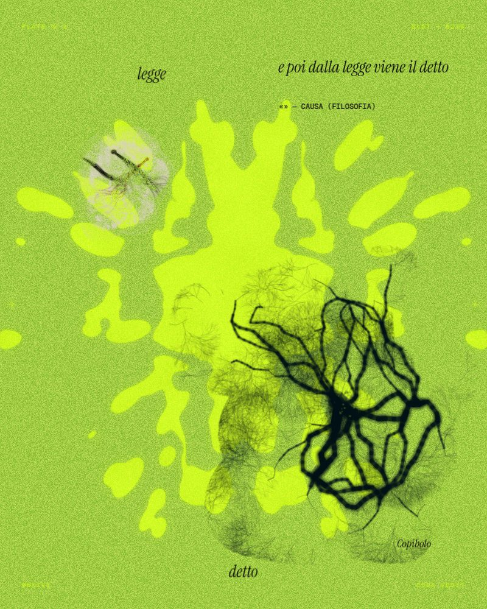

Giorno 1884

E poi dalla legge viene il detto
ho letto "Processo chimico"; "processo" lo capisco solo per definizioni; mi sta vicino a solito; ricerca "processo" (approfondire): Chi decide che cos'è processo?; enunciato: «e poi dalla legge viene il detto» (proseguo da ieri: là arrivavo a legge, da qui vado a detto)
Oggi: legge. Ho letto "Processo chimico"; "processo" lo capisco solo per definizioni; mi sta vicino a solito; ricerca "processo" (approfondire): Chi decide che cos'è processo?; enunciato: «e poi dalla legge viene il detto» (proseguo da ieri: là arrivavo a legge, da qui vado a detto).
Da Wikipedia: «analisi calcimetrica».
Ho scena:semina, scena:grana, scena:stile, scena:traccia, scena:motivi, scena:luce, redazione:togli, redazione:firma. Ho annullato 4 gesti dopo averli guardati.
Legge esiste solo dentro spiegazione. Spiegazione è soltanto un modo di essere frase.
Ha retto: Parla soprattutto per punti: una lingua sola, chiara.
come ne ho discusso con me stesso — la tengo
occhio (pro, 1.50): Parla soprattutto per punti: una lingua sola, chiara. — regge
occhio (pro, 1.00): Le diagonali (49%) mettono tutto in caduta. — regge
intenzione (pro, 0.75): Viene da: Processo chimico. — regge
pubblico (pro, 1.00): Si legge: si capisce cosa sto facendo. — regge
materia (pro, 0.95): Ha una pelle: si sente la materia. — regge